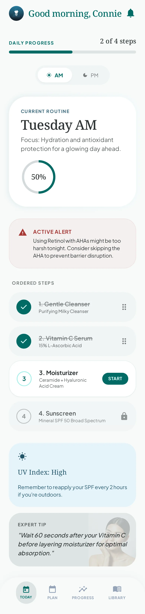
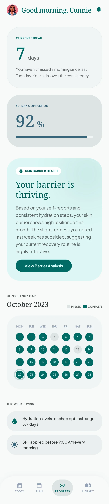
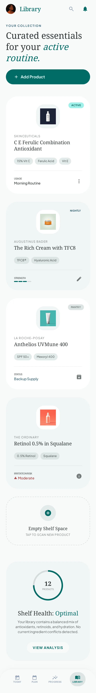
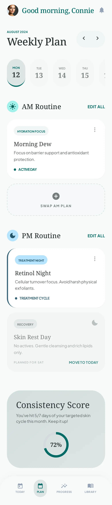

Tell Connie about your skin
Choose your skin type, main concern, sensitivity, budget, and the amount of routine you actually want.
Connie's Skin turns the products you already own into a clear AM and PM plan—then helps you spot risky combinations, stay consistent, and understand what comes next.


AM + PM plansKnow what to use today
Safety cuesCatch common active conflicts
Progress, gentlySee consistency without guilt
Private by designClear controls for your data
A simple rhythm
Good skincare is often less about adding more and more about knowing what belongs together, when to use it, and how to keep going.
Choose your skin type, main concern, sensitivity, budget, and the amount of routine you actually want.
Arrange the products you own, or start with a personalized routine that keeps daily SPF and active spacing in view.
Check off each step, get a gentle nudge when you want one, and see consistency build over days and weeks.
Made for real bathrooms
See your steps in order, switch between morning and evening, and mark progress without turning your routine into another performance metric.
Connie flags a small set of common routine risks—like combining a retinoid with an acid or missing SPF in the morning—and gives you a calmer next step.
High-priority check
Retinoid and exfoliating acid in the same routine may increase irritation. Consider a recovery night between them.
A monthly view, adherence trends, and streak milestones help you notice consistency while leaving room for real life.

Built around your week
Schedule recovery nights, treatment nights, and everyday basics across the week. Your Today screen always pulls the right plan forward.
Ask about beta access

Privacy is part of the routine
Connie's Skin uses your account and routine data to run the features you choose. We do not sell personal information, run third-party ads, or use an advertising profile to shape your recommendations.
The honest answers
Connie is a routine companion, not a dermatologist. The app is designed to make everyday skincare easier to follow—not to diagnose or treat a condition.
No. Ingredient cautions and scan feedback are educational, cosmetic guidance. Stop using a product that causes irritation and consult a qualified clinician for persistent or concerning symptoms.
No. You can add the products you already own and build your own AM and PM plans. Personalized product suggestions and optional kit checkout are separate from core tracking.
The core routine planner, safety cues, completion tracking, and quiz experience are designed to be available without a subscription.
Open Settings in the app and choose Delete Account. You can also contact support if you cannot access the app.
Coming together now
Connie's Skin is being prepared for iOS and Android. Ask to join the beta or get in touch with a question.